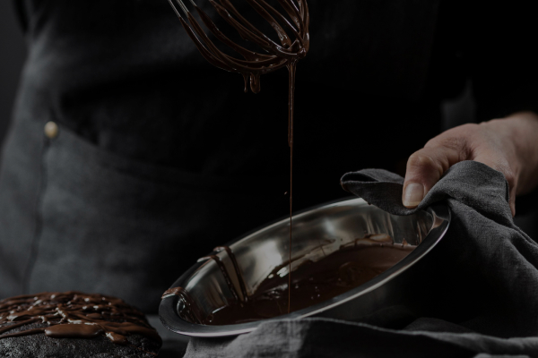

<section class="how-its-made">
  <div class="container">
    <h1 class="how-its-made-title" id="">
      hOW IT’S <span class="how-its-made-title two">made?</span>
    </h1>
    <div class="how-its-made-contain">
      <div class="how-its-made-video">
        <!--<iframe width="600" height="400" src="https://www.youtube.com/embed/DISjdfkSjc8" title="YouTube video player"
        allow="accelerometer; autoplay; clipboard-write; encrypted-media; gyroscope; picture-in-picture; web-share"
        allowfullscreen></iframe> !-->
        
      </div>
      <div class="how-its-made-list">
        <h2 class="how-its-made-subject">
          Try our chocolates today and discover the perfect balance of flavor
        </h2>
        <ul class="how-its-made-items">
          <li class="how-its-made-list">
            Heat the milk in a saucepan without bringing it to a boil. Add sugar and cocoa powder.
          </li>
          <li class="how-its-made-list">
            At the same time, prepare a water bath. Melt the butter on it.
          </li>
          <li class="how-its-made-list">
            "Mix" the milk mixture and already liquid butter. Mix thoroughly with a silicone spatula so that the mass
            becomes
            uniform and silky.
          </li>
          <li class="how-its-made-list">
            Heat the mixture over low heat, letting it barely boil.
          </li>
          <li class="how-its-made-list">
            Pour the chocolate into special containers (can be replaced with ice molds). Allow to cool and harden.
          </li>
        </ul>
      </div>
    </div>
  </div>
</section>